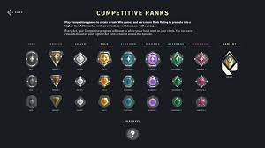

Valorant is a 5v5 first person shooter team based game. In this game, the team that wins 13 rounds will win the match, but in certain modes like competitve, you will have to win by 2. There are agents that have different abillities in this game.
Currently, there are 19 agents in Valorant so far, and they all have their own unique abilities which can be used to help the team win the match. Those agents are:
This is a valorant tierlist of the agents. S Tier are the best agents and C Tier are the worst agents.
In competitive mode, there are 9 different ranks to show the skill level of the player. The ranks from least-to-greatest are: Iron, Bronze, Silver, Gold, Platinum, Diamond, Ascendant, Immortal and Radiant. Which makes radiant the best rank in the game, but only the top 500 players in the whole world are radiant, and if you're top 1% in your region, you will be immortal.
Yes, Valorant has a lore. Valorant exists because of an event that occured which is called "The First Light". The First Light occured around 2039 and Valorant is based around our world. An element called 'Radianite' has been created because of this event, and some of the people who were exposed to Radianite obtained superpowers, which is why agents have abilities in the game. You can learn more about the lore if you click here.
There are multiple different team composition in the games, and each of them are different for each map in the game. These team composition can help you win against the opposing team even if they're better than you, so it's important to know some team compositions. The average team composition is 2 duelists, 1 controller, 1 initiator and 1 sentinel, but as you progress through the ranks, the team comps will get different for each map for example: if the map is a big one, you might have 2 sentinels instead of 1, if the map has a lot of angles you can hold then you might want 2 initators instead of 1 and so on. The team composition changes a lot, due to more agents getting added to the game.
PBE (Public Beta Environment) is where new content goes to be tested before being released to the actual game. Anyone can sign up for PBE but you can't have any warnings (other than afk warnings).
In this game, each agents have a role. There are duelists, initiators, controllers and sentinels. Duelists are expected to seek out engagements and a frag and they have the most impact in the match as they are aggresive. Initiators challenge angles by setting up their team to enter contested area and clear it. These agents provide support to duelists when they entry. Controllers are agents that usually have smokes to help the team clear the ground and block the vision of the enemy team. These smokes can be used offensively or defensively and you can do crazy plays with it. Sentinels are experts at defending a ground by locking down areas and watching flanks on both attack and defender side rounds.
Like most FPS (First Person Shooter) games, this one has skins for each weapon, but it costs Valorant Points, which is the in-game currency for the game. To get valorant points, you have to use money to get it, but if you do get a skin, depending on the skin, you can upgrade it so it gets an animation and kill effect. Though I said skins cost valorant points, there are some that don't, and those are skins from the battle pass. Every act, the game has a battle pass which has skins for different guns, but near the end of the battle pass, you can get a free skin but it will a secondary skin only, and it's the same for everyone. There is also contracts, where if you were to activate a contract for any agent and get the contract level to the max (10), you will get a free secondary weapon skin. There is a nightmarket in the game which will have 5 random skins in it and those 5 skins will have a discount (everyone doesn't have the same nightmarket). Skins do not give any advantages in this game, it's purely cosmetic and nothing else. People say that some skins give aimbot due to the sound it makes when you shoot it and gives you an advantage since many people try to pick up skinned weapons on the ground which causes them to not check the corners or be aware of the enemy being there and then die.